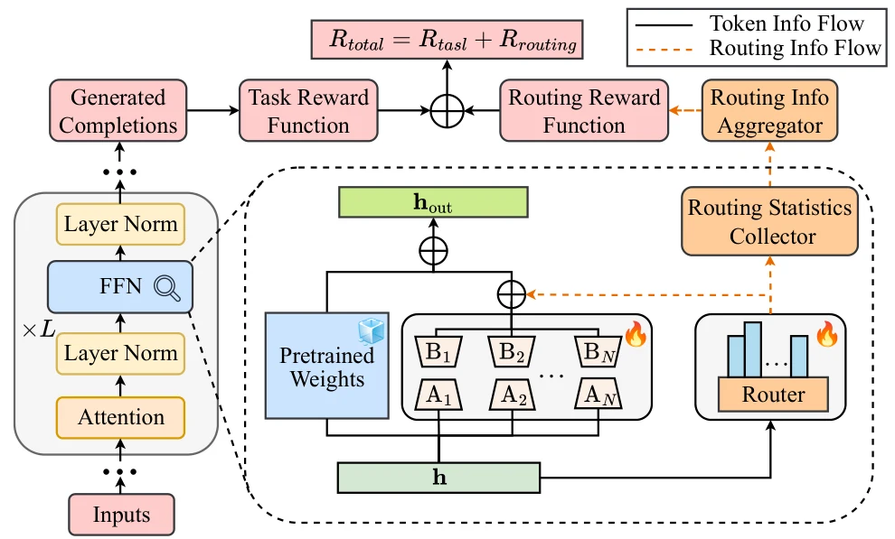
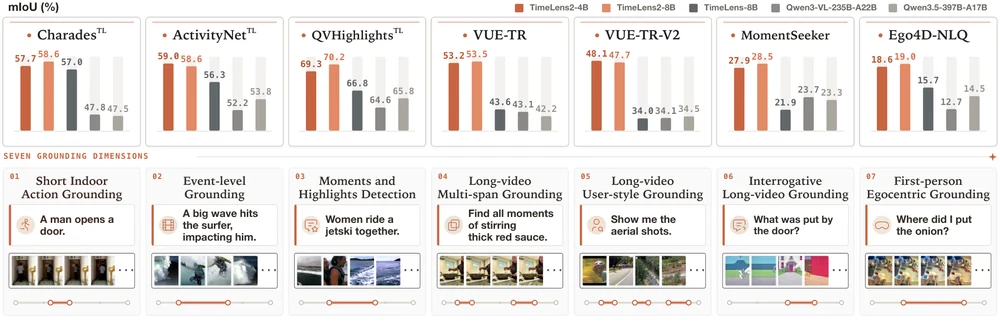
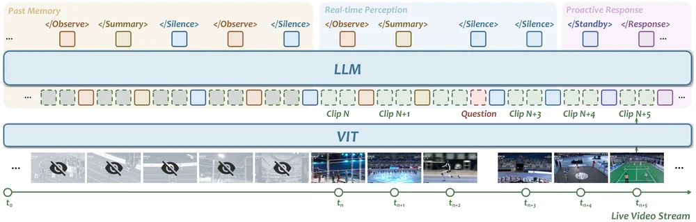
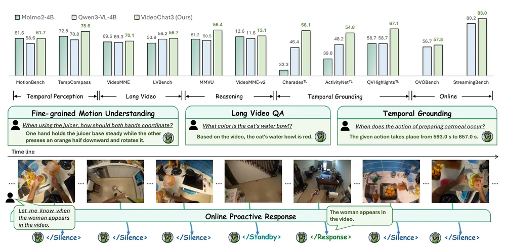
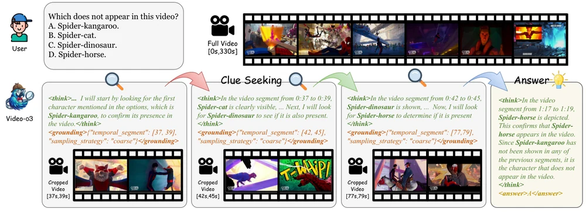
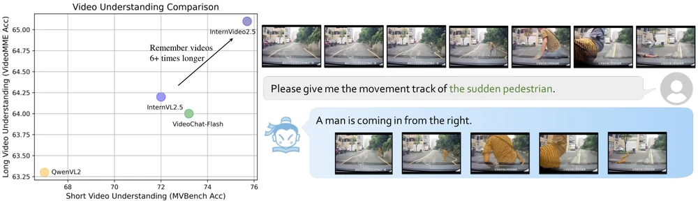

Balancing the Experts: Unlocking LoRA-MoE for GRPO via Mechanism-Aware Rewards
ICLR 2026Mechanism-aware routing rewards improve expert utilization and reasoning in LoRA-MoE during GRPO fine-tuning.

M.S. Student in Computer Science & Technology, Nanjing University
I am a Master's student at Nanjing University, advised by Prof. Limin Wang. I am currently a research intern at Shanghai AI Laboratory (OpenGVLab). My research focuses on Multimodal Large Language Models and Reinforcement Learning for LLMs, with interests in AI4Gaming and AI4Finance. Previously, I received my B.Eng. from Beijing University of Posts and Telecommunications in 2025.

Mechanism-aware routing rewards improve expert utilization and reasoning in LoRA-MoE during GRPO fine-tuning.

Generalist video temporal grounding with verified multi-span supervision and temporal Wasserstein rewards.

Streaming video interaction combining real-time perception, hierarchical caption memory, and evidence-grounded proactive responses.

A fully open 4B video MLLM for efficient general, long-form, and streaming video understanding.

Native video tool use and trajectory-guided reinforcement learning enable iterative clue seeking and long-video multi-hop reasoning.

Adaptive token compression and preference optimization strengthen fine-grained perception and long-context video understanding.
M.S. in Computer Science & Technology · Advisor: Prof. Limin Wang
B.Eng. in Computer Science & Technology · GPA: 3.84 / 4.0 (Top 1%)
Research Intern
Conduct research on video multimodal foundation models, spanning long-context understanding, temporal grounding, and streaming interaction. Contribute to InternVideo2.5, Video-o3, TimeLens2, VideoChat3, and OneStreamer, with a focus on supervised and reinforcement learning, evidence-grounded reasoning, and memory-based proactive response.
Research Collaboration
Investigated reinforcement learning for parameter-efficient multimodal models, addressing routing collapse and expert underutilization in LoRA-MoE. Developed RO-GRPO, a mechanism-aware reward framework that improves routing behavior and reasoning performance during GRPO fine-tuning. This work was published at ICLR 2026.